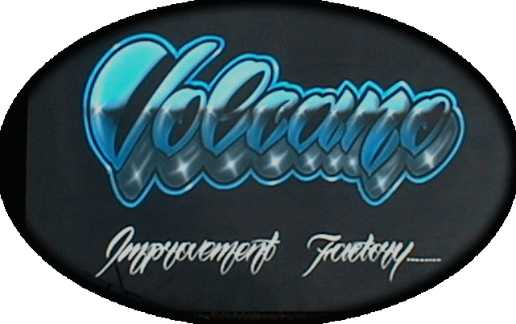
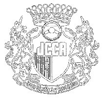
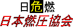
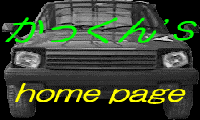
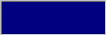
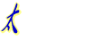
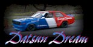
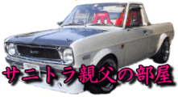
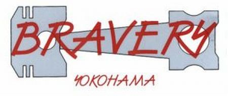
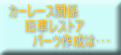

| OILと添加材をご提供いただきました。 | |
| ボディワークの強い味方。塗料・その他をご提供いただきました。 | |
| TOOL BOX | プライベートチューンの強い味方。様々なパーツをご提供いただきました。 |
| 支配人様にご支援いただきました。 | |
| BUTLER246 | ベース車両をご提供いただきました。 |
 |
フルオーダーマフラーショップです。超軽量で美しいチタンマフラーを製作していただきました。 |
| お気に入りのブレーキパッド「Project μ」。ブレーキパッド、ブレーキフルードをご提供いただきました。 | |
| ステアリングボスをはじめ、様々なご支援をいただきました。 |
 |
クラシックカーレースの主催者様 |
 |
宮城のKP集団 |
| 2T-Gオーナーズクラブ | |
 |
かっくんさん |
| 70系カローラオーナーズクラブ | |
| おぽよんさん | |
 |
日本燃圧協会、Ｋ．さとー氏 |
| 赤城のあばれん坊。熱い走りに注目。 | |
| 有名ショップ「石塚自動車」に集う人々 | |
 |
太伊矢屋さん |
| 香港のKP61 Fans、Mr Tsang sir | |
 |
Datsun Dreamさん |
| ニュージーランドのMr Jamie Hodgins が所属する「Club K」 | |
| TSカップにサニーで参戦されている「BCC Factory」さん | |
| TSカップに参戦されているOGURAさんのサイト「310-SUNNY PAGE」 | |
 |
九州の旧車愛好会「サニトラ親父の部屋」 |
 |
「ブレイバリィ」さん |
 |
「RacingHouse亜斗夢」さん、カフェトレドトリイサニーが復活！必見です |
| ガレージモリムラチューンの凄いKPに乗るtakeさん |
| CARBOY | |
| OPTION | |
| J's Tipo |